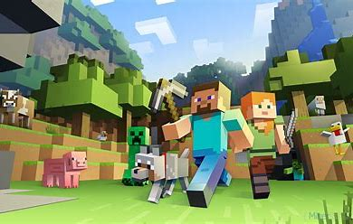

-

В Minecraft серверы предоставляют игрокам возможность играть в многопользовательском режиме, взаимодействовать друг с другом и создавать уникальные игровые миры. Вот некоторые основные аспекты серверов в Minecraft: 1. Виды серверов: - Официальные сервера: Предоставляют Mojang, компания, разработавшая Minecraft. - Сторонние сервера: Созданные игроками или сторонними разработчиками с использованием серверного ПО. 2. ПО для серверов: - Vanilla: Официальное серверное ПО, предоставляемое Mojang. - Spigot, Bukkit, Paper: Расширенные серверные платформы с плагинами и дополнительными возможностями. 3. Плагины: - Расширения, добавляющие новые функции и возможности на серверах. - Например, плагины для защиты, экономики, разнообразных игровых механик и т.д. 4. Моды: - Кастомизированные изменения игры, которые могут быть установлены на сервер и видны всем игрокам. - Например, моды, добавляющие новые блоки, мобы или изменяющие игровые механики. 5. Режимы игры: - Survival: Выживание с добычей ресурсов и борьбой за выживание. - Creative: Бесконечные ресурсы и возможность строить без ограничений. - Adventure: Игровые карты с заданиями и приключениями. - Spectator: Наблюдение за игрой без воздействия. 6. IP-адреса и порты: - Для подключения к серверу нужен IP-адрес и порт, который указывается при входе в игру. 7. Администрирование: - Владельцы серверов и администраторы могут управлять правилами, плагинами, банами и другими аспектами игрового процесса. Запуск и управление сервером требует технических навыков, но существуют также хостинг-платформы, предоставляющие услуги по размещению серверов Minecraft.